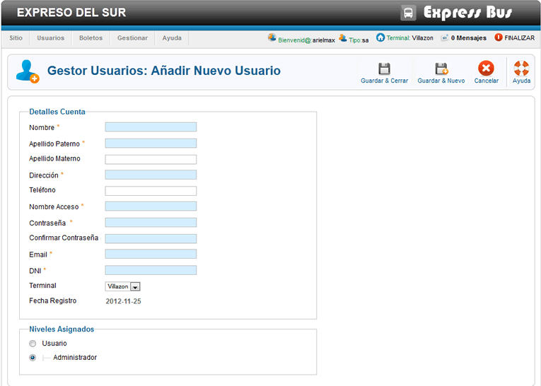

Ayuda Añadir Nuevo Usuario
Este formulario nos permite registrar a un nuevo usuario en el sistema los campos marcados con * son obligatorios, los pasos son muy simples:
En el campo Nombre * Colocamos los nombre/s Reales del Usuario.
En el campo Apellido * colocamos el apellido/s del Usuario.
En el campo dirección * colocamos la dirección del Usuario Domicilio.
En el campo Teléfono colocamos el número de teléfono fijo o celular del Usuario.
En el campo Contraseña * colocamos la contraseña de acceso al sistema para el Usuario.
En el campo Confirmar Cotraseña volvemos a escribir la contraseña.
En el campo Email * colocamos el Email del usuario.
En el campo DNI * colocamos el número de documento del usuario o un número de idendificación.
Niveles Asignados Podemos seleccionar el tipo de nivel que tendra el usuario esto en base a su función de trabajo.
Usuario es aquel que solo tendra acceso a funciones básicas del sistema, y que solo podra ejecutar las funciones relacionadas con su función de trabajo.
Administrador es aquel que tine acceso a toda la información perteneciente a su terminal, este podra administrar usuarios, ver el informe económico, puede acceder a todas las funciones de trabajo de la terminal que le corresponde, podra vender boletos, enviar paquetes, etc.
Terminal Permite establecer la terminal de trabajo del usuario, Esta opción solo la podra cambiar el super administrador. otro usuario no podra cambiar esta opción.
Por último una vez llenado el formulario, podemos seleccionar dos formas de guardado.Una es precionar el boton Guardar & Cerrar  el cual agrega al usuario al sistema y nos envía al gestor de usuarios. La otra opción es precionar el botón Guardar & Nuevo el cual agrega al usuario al sistema y se abre otro nuevo formulario permitiendonos agregar a otro usuario.
el cual agrega al usuario al sistema y nos envía al gestor de usuarios. La otra opción es precionar el botón Guardar & Nuevo el cual agrega al usuario al sistema y se abre otro nuevo formulario permitiendonos agregar a otro usuario.